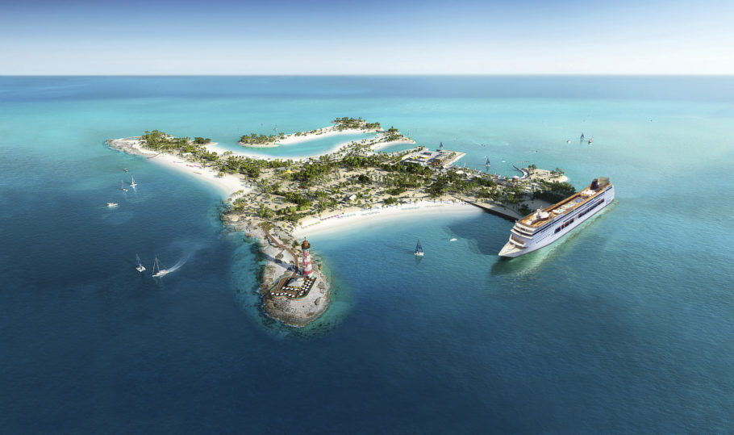

Descruba nossas melhores ofertas do momento!

Relaxe e deixe todos os detalhes com a gente.
Descubra os melhores destinos de cruzeiros, com uma ampla variedade de itinerários mapeados para revelar as paisagens, sons e sabores das culturas mais intrigantes do mundo.
Com os cruzeiros no Brasil, visite as belas praias de água cristalina com os cruzeiros para o Nordeste, região que possui uma natureza intocada. Ou viaje com a MSC Cruzeiros rumo às praias tropicais do Sul e Sudeste, com lindos centrinhos em ruas de paralelepípedos para caminhar e charmosos bares e restaurantes. A rota da Prata com a Argentina e Uruguai também faz parte dos destinos de cruzeiros na América do Sul! Fique encantado com as belezas da capital argentina, Buenos Aires, ao som de um bom tango argentino e acompanhado de deliciosas empanadas. Aproveite também Punta del Leste, com a famosa Casa Pueblo e a imperdível escultura La mano, e Montevidéo, banhado pelas águas do Rio Prata e recheado de atrações